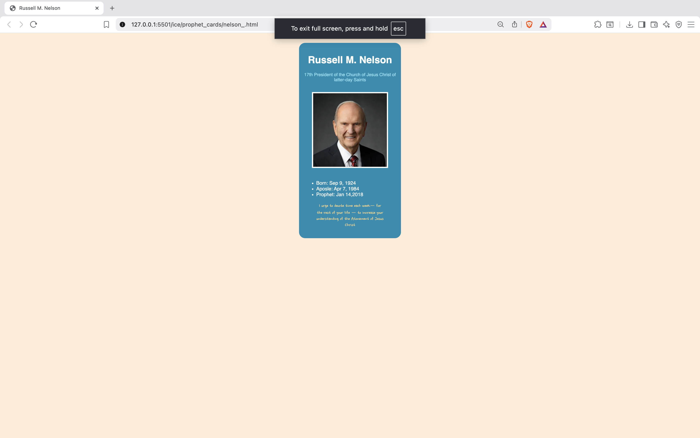
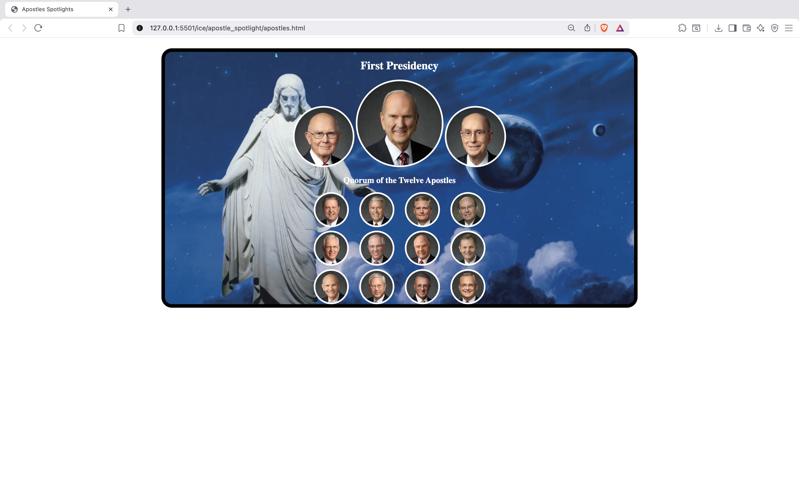
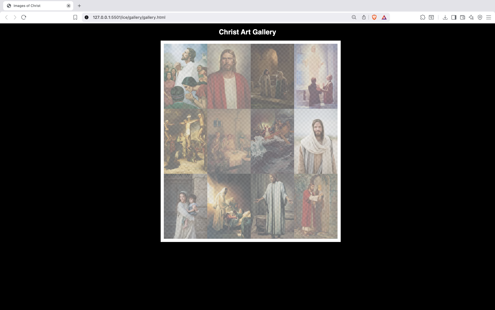
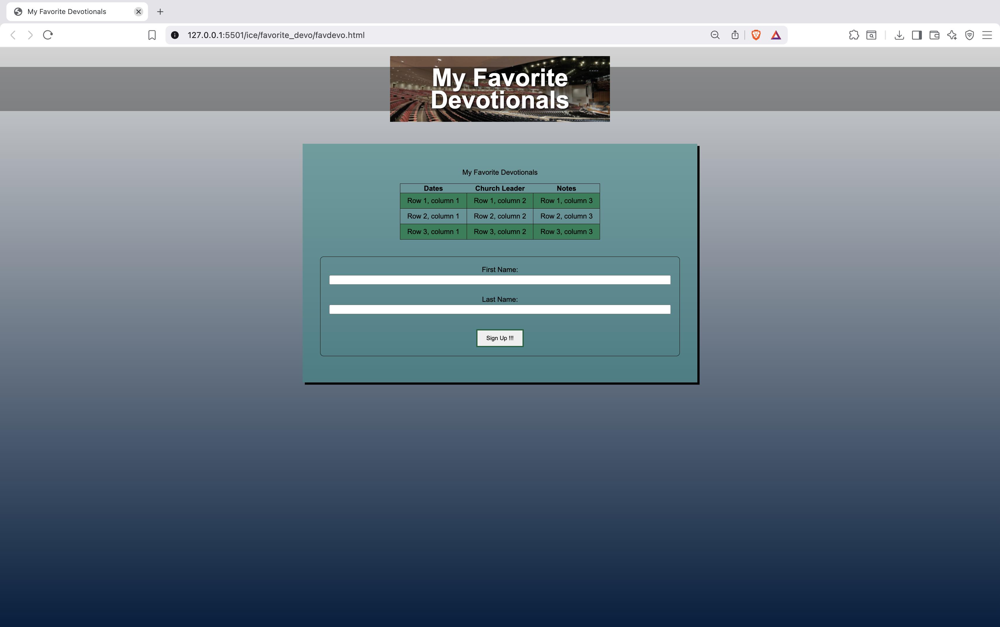
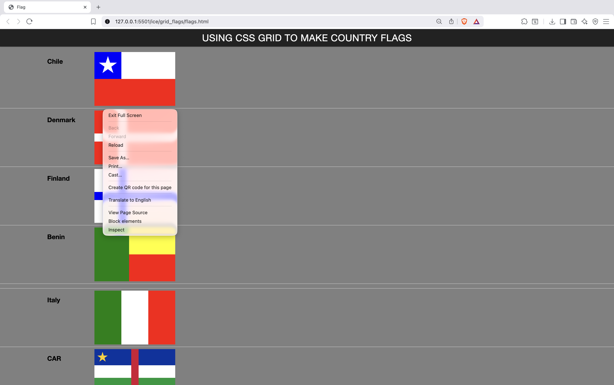
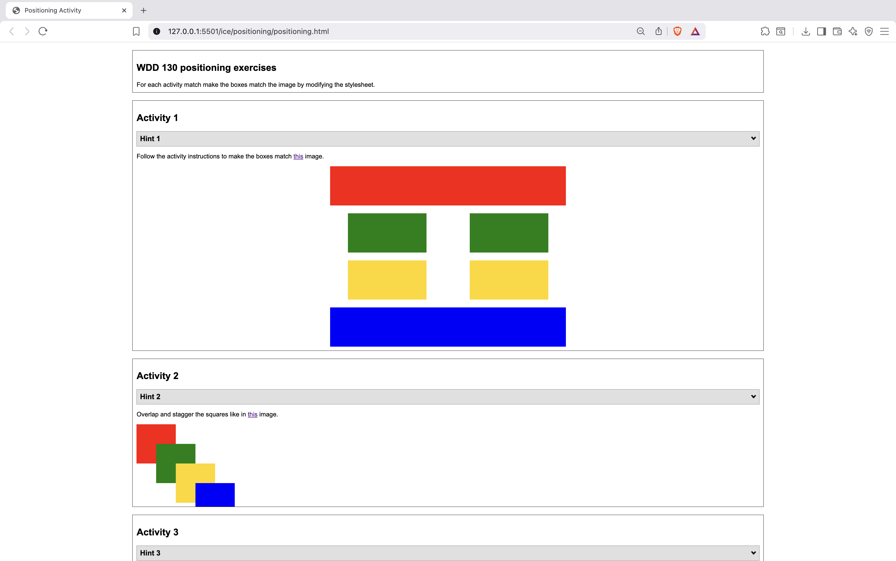
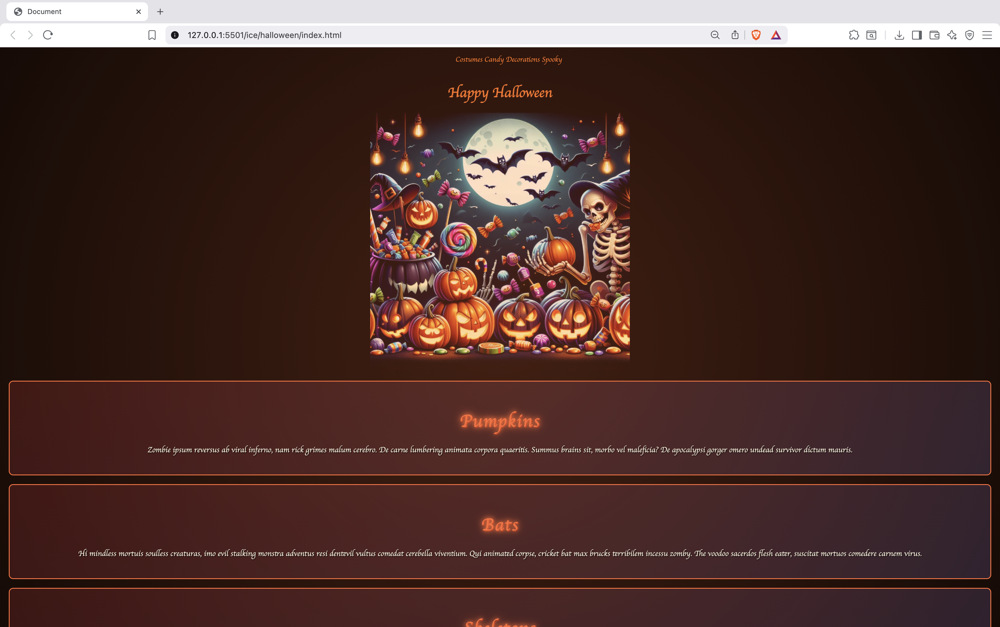

Prophet Card
This challenge focused on cards and content structure. I built a card that displayed information about President Russell M. Nelson, including his picture, background color, birth and prophet dates, and a short quote. It helped you practice text alignment, image borders, and box styling.

The Quarum of the twelve Apostle
This challenge was about using images, layout, and visual hierarchy. You built a design showing the First Presidency and Quorum of the Twelve Apostles in circular photo layouts with borders and a themed background. It demonstrated your skills in image styling, flexbox/grid alignment, and presentation design.

Daily Feed
I created a sign-up form styled like a modern website card. It included form elements (text inputs, radio buttons, checkboxes, and a submit button) and used CSS positioning, borders, and background images to make the design attractive and centered.

Jesus Christ Galery
TThis activity focused on improving website performance by reducing image loading times. You learned how to optimize image sizes so that the page loads faster while still maintaining good visual quality. Additionally, you made each image clickable, linking it to its full-size version, which allows users to view it in high resolution when needed. This challenge taught you how to balance design and performance — a key skill in web development.

Favorire Devotionals
This project involved a simple form and table layout. You listed devotional notes in a table, then added a sign-up form for users to register. It helped you practice HTML tables, form elements, and background gradients.

CSS Grid Flags
In this assignment, you used CSS Grid Layout to build national flags (like Chile, Denmark, Finland, Benin, Italy, and CAR). It was an excellent way to understand how grid rows and columns work and how to position colors precisely to form designs.

Positioning Activity
In this exercise, you learned how to position elements using CSS. You worked with relative, absolute, and fixed positioning to align and overlap colored boxes to match reference images. It helped you understand layout control and how elements interact on a page.

Halloween Page
I designed a Halloween-themed webpage using CSS colors, borders, and typography. It had a spooky background, themed fonts, and a centered image of pumpkins and skeletons. This activity helped you practice theming, spacing, and content section styling.
